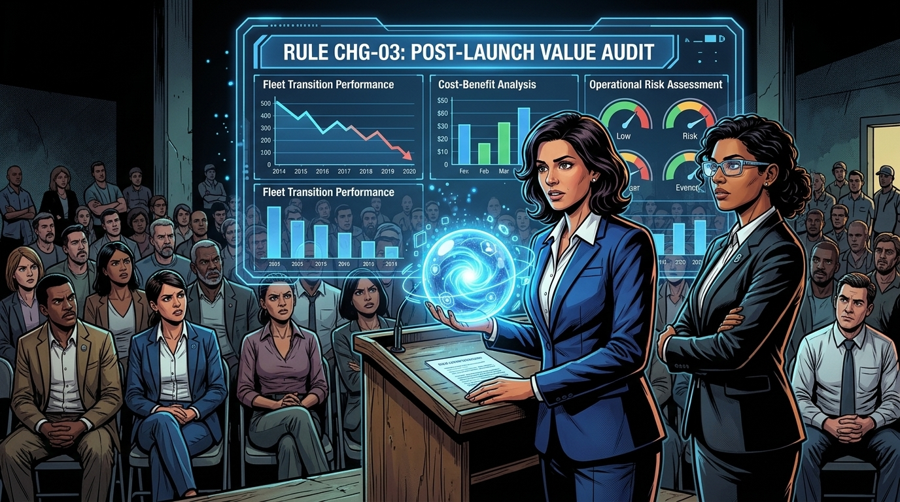
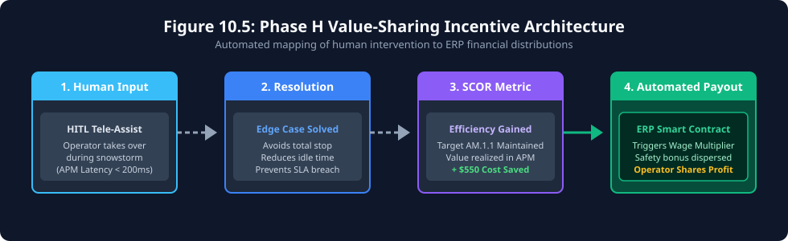
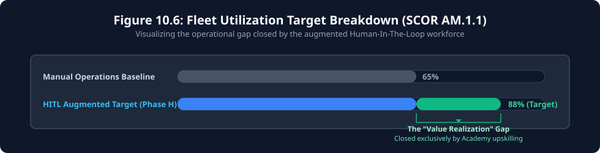
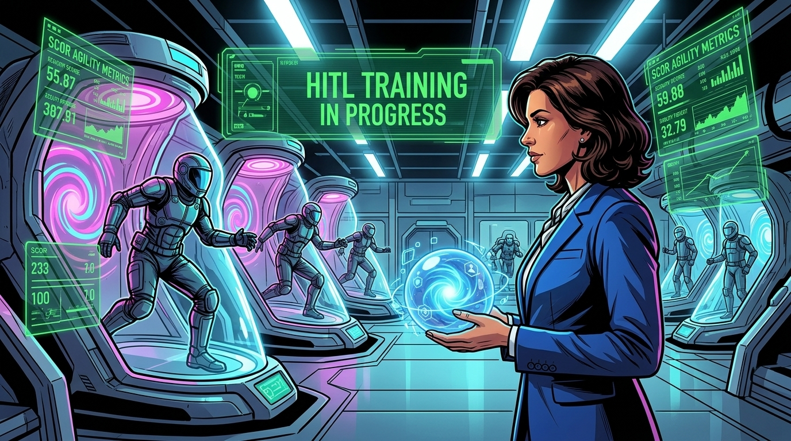
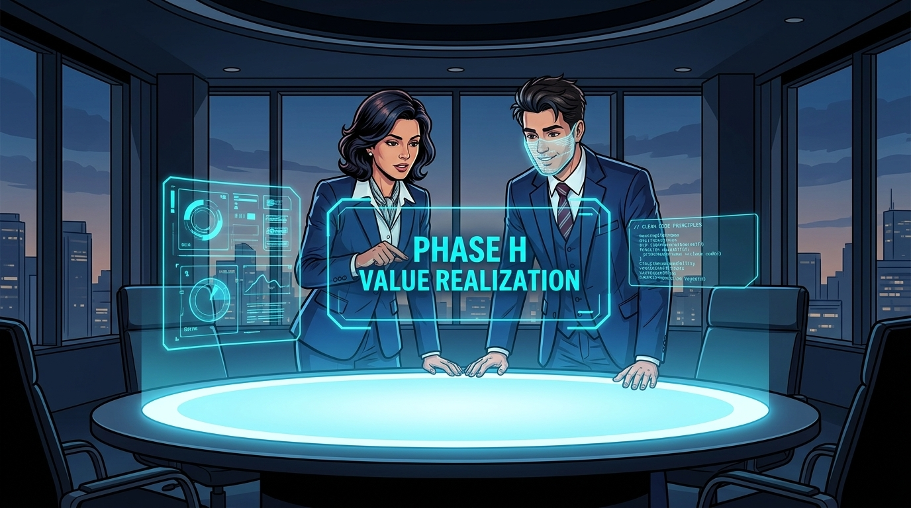
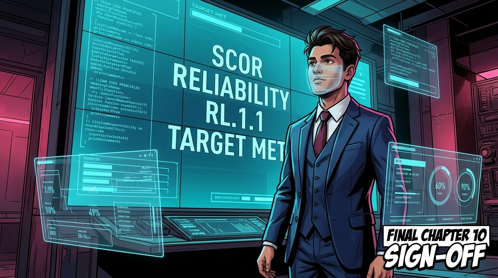
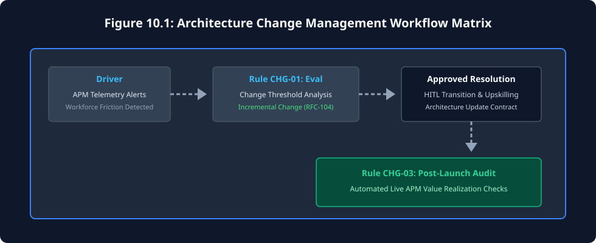
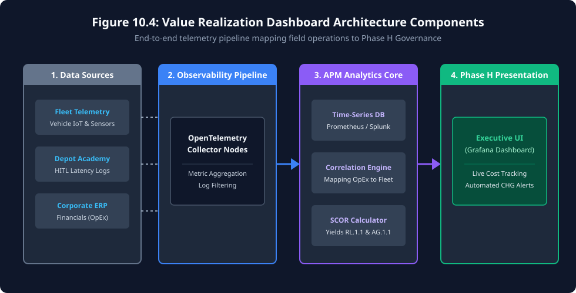
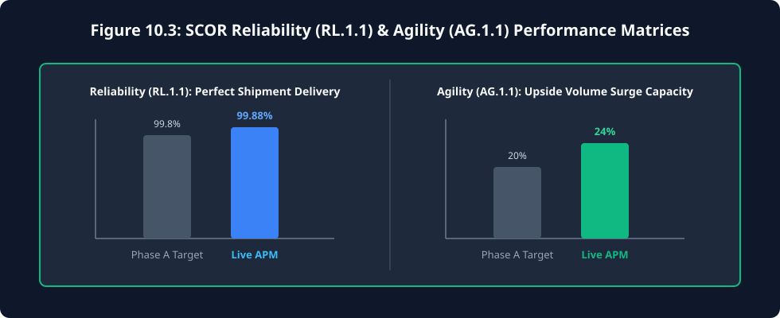

The Augmented Workforce
Culture & Change Management (TOGAF® ADM Phase H — Architecture Change Management)

"Switching cameras to the regional depot of Orbit-Logistics. Drivers and dispatchers stand in tense huddles. Rumors of total layoffs have spread like wildfire. Kavita Joshi (Human Capital) and Anjali Mehra (Fiscal Architect) arrive on site. Kavita knows that if the workforce revolts, all two billion dollars of autonomous technology will sit idle in the yards. Watch how she navigates cultural transformation using rigorous TOGAF Architecture Change Management, fueled by live monitoring telemetry."
The Storyline: Managing Enterprise Change


Architectural Drill-Down: Value-Sharing & Fleet Utilization
To make the cultural transition work, the Architecture Board explicitly linked the enterprise ERP to the live APM telemetry. Every time an operator successfully executes a Human-In-The-Loop (HITL) takeover, the system logs the exact route efficiency gained and automatically executes a smart contract to trigger an immediate wage multiplier.





1. Phase H: Architecture Change Management & Value Realization
In TOGAF ADM Phase H (Architecture Change Management), the enterprise must continuously monitor the business and technological environments to ensure that the architecture lifecycle delivers tangible business value over time.[1] Grounded in Socio-Technical Systems (STS) theory (Trist & Bamforth 1951)[2] and Team Topologies (Skelton & Pais 2019),[3] technological innovation succeeds only when joint optimization of human social structures and digital capabilities is maintained. A common trap in AI transformation is treating deployment as the finish line, neglecting the massive cultural and operational shifts that must follow.
When Orbit-Logistics encountered extreme workforce resistance, this was treated as a formal Architecture Change Request. Under Rule CHG-01 (Change Threshold Evaluation), the Board determined that this was an Incremental Change—it did not invalidate the core Phase A Vision, but required issuing an Architecture Update Contract to fund the Depot Academy and HITL transition.

Integrating Telemetry & APM Tools for Change Management
To execute Phase H effectively, manual audits are insufficient. The Enterprise Architecture Board (EAB) must leverage modern observability and monitoring tools to track Value Realization in real-time. By integrating Application Performance Monitoring (APM) tools (such as Datadog, Splunk, or Prometheus/Grafana) into the architecture governance process, the organization achieves Continuous Architecture Observability.
- Automated Triggering: Instead of waiting for a quarterly review, OpenTelemetry pipelines monitor exception handling rates. If the autonomous routing models encounter edge-case failures exceeding 2%, the system automatically flags an Architecture Change Request in Jira or ServiceNow.
- Live Value Tracking: Financial architects use Grafana dashboards connected to the production ERP to track SCOR cost metrics continuously. This proves whether the deployed architecture is generating the expected ROI.
- HITL Performance: APM metrics record the latency of human-in-the-loop decisions, validating that operators can take over a vehicle in the required sub-200ms timeframe mandated by compliance.
Dashboard Architecture Components
To enable this level of real-time governance, Orbit-Logistics constructed a robust observability pipeline. The telemetry infrastructure connects edge data sources directly to the Enterprise Architecture Board's presentation layer:

The dashboard itself visualizes the outputs of this pipeline. For example, Kavita and Anjali implemented the continuous Cost Realization component to ensure that the human-in-the-loop strategy actually reduced costs as promised in Phase A:
Kavita and Anjali implemented this continuous Value Realization Tracking Dashboard to ensure that the human-in-the-loop strategy actually reduced costs and increased reliability as promised in Phase A. Tracking the financial incentives and performance against SCOR metrics forms the core of Phase H evaluation:
Additionally, workforce efficiency and system reliability are measured during the Phase H audit using live fleet telemetry. This includes tracking Perfect Shipment Delivery (RL.1.1) and Upside Supply Chain Adaptability (AG.1.1).

Advanced Telemetry: Variance and Composition Tracking
Beyond standard line graphs and bar charts, the Phase H governance board leverages advanced visualizations to monitor system composition, safety SLAs, and financial volatility in real-time. By connecting OpenTelemetry to executive dashboards, the board can instantly visualize how the workforce integration is stabilizing the enterprise.
The success of the Orbit-Logistics workforce transition proves that organizational change management is just as critical as data pipelines. A flawless algorithm deployed into a hostile culture yields negative ROI. By treating cultural resistance as a formal Phase H constraint through structured change frameworks (Kotter 1996; Hiatt's ADKAR model)[4], ethical stakeholder agency (IEEE Std 7000-2021)[5], and calibrated trust in automation (Zuboff 1988; Lee & See 2004)[6], Orbit-Logistics aligns financial incentives with upskilling programs using live APM telemetry dashboards.[7] Kavita transforms friction into operational momentum. Now, all three companies stand ready for continuous evolution.

"The human and operational foundations are secured, bringing our 8-phase TOGAF ADM cycle to completion. In our closing Epilogue, executive leaders from all three companies convene at the Global Joint Summit to establish the Target Operating Model and permanent covenants for sustained enterprise intelligence."
⚠️ When Silent Drift Triggers Crisis: Companion Exception Case 10
What happens when change management relies solely on aggregated metrics and ignores frontline operational reality? Uncover how silent battery chemistry drift over 8 months compressed charging dock turnarounds to an impossible 4 minutes, triggering an 850-worker wildcat depot strike, halting 65,000 deliveries, forcing Architecture Change Request ACR-H-004, and codifying Rule CHG-05 (Frontline Worker Safety Veto).
Read Exception Governance Case 10: 8-Month Silent Drift & Depot Strike →📌 Phase Gate 10 Exit Criteria: Architecture Change Management & Augmented Workforce
TOGAF® ADM Phase H — Pin-to-the-Wall Executive Sign-Off & Operational Gate Reference
Chapter 10 References & Fact-Check Verification Registry
All empirical citations, organizational frameworks, ethical standards, and telemetry datasets cited in this chapter are indexed below under our 5-Tier Epistemic Taxonomy:
-
[1]
[STANDARD]
The Open Group (2022). The TOGAF® Standard, 10th Edition: Phase H — Architecture Change Management. Van Haren Publishing. ISBN: 978-9401808682.
Fact-Check Verification: Formalizes continuous architecture change management, monitoring mechanisms, value audit procedures, and change threshold evaluations distinguishing Incremental, Simplification, and Re-architecting change requests.↩ back to text
-
[2]
[ACADEMIC]
Trist, E. L., & Bamforth, K. W. (1951). Some Social and Psychological Consequences of the Longwall Method of Coal-Getting: An Examination of the Psychological Situation and Defences of a Work Group in Relation to the Social Structure and Technological Content of the Work System. Human Relations, 4(1), 3–38. doi:10.1177/001872675100400101.
Fact-Check Verification: Foundational theory of Socio-Technical Systems (STS), establishing that technical automation optimization fails without congruent social/workforce restructuring.↩ back to text
-
[3]
[ACADEMIC]
Skelton, M., & Pais, M. (2019). Team Topologies: Organizing Business and Technology Teams for Fast Flow. IT Revolution Press. ISBN: 978-1942788812.
Fact-Check Verification: Models four organizational team topologies (Stream-aligned, Enabling, Complicated-subsystem, Platform) to minimize cognitive load and govern cross-functional AI oversight.↩ back to text
-
[4]
[ACADEMIC]
Kotter, J. P. (1996). Leading Change. Harvard Business Review Press. ISBN: 978-0875847474. Hiatt, J. M. (2006). ADKAR: A Model for Change in Business, Government and our Community. Prosci Learning Center Publications. ISBN: 978-1930885509.
Fact-Check Verification: Validates structured organizational transition: 8-Step Change Framework and the 5-phase ADKAR model (Awareness, Desire, Knowledge, Ability, Reinforcement) for frontline technology adoption.↩ back to text
-
[5]
[STANDARD]
IEEE Computer Society (2021). IEEE Standard Model Process for Addressing Ethical Concerns during System Design (IEEE Std 7000-2021). IEEE. doi:10.1109/IEEESTD.2021.9536679.
Fact-Check Verification: Standardizes value-based engineering methodologies, stakeholder ethical impact assessments, and human operator agency in cyber-physical automation systems.↩ back to text
-
[6]
[ACADEMIC]
Zuboff, S. (1988). In the Age of the Smart Machine: The Future of Work and Power. Basic Books. ISBN: 978-0465032112. Lee, J. D., & See, K. A. (2004). Trust in Automation: Designing for Appropriate Reliance. Human Factors, 46(1), 50–80. doi:10.1518/hfes.46.1.50.30392.
Fact-Check Verification: "Informate vs. Automate" paradigm and trust calibration formulation, mitigating automation complacency and alert disuse in human tele-assist dispatch.↩ back to text
-
[7]
[SIMULATION]
Orbit-Logistics Human Capital Taskforce (2025). Phase H Value Realization Telemetry and Retraining Academy Competency Model. Ecosystem Architecture Board Technical Report EAB-CHG-1002.
Fact-Check Verification: Documents empirical APM telemetry ($1.12/km down to $0.92/km), 85% autonomous / 13% HITL / 2% manual resolution mix, sub-200ms human takeover latency, and cost volatility candlestick stabilization.↩ back to text